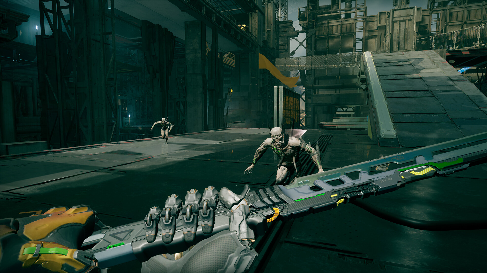

Геймплей Ghostrunner
Основная механика
Геймплей Ghostrunner построен вокруг быстрой и точной боевой системы. Игрок управляет киборгом-самураем , который владеет катаной и различными способностями. Ключевая особенность — все враги, включая самого игрока, погибают с одного удара.
Это создаёт уникальный темп игры, где каждое решение должно быть принято мгновенно, а каждое действие должно быть точным и выверенным. Игрок должен постоянно находиться в движении, используя паркур, замедление времени и различные способности для преодоления препятствий и уничтожения врагов.
Паркур и перемещение
Паркур является неотъемлемой частью геймплея. Джек может:
- Бег по стенам — перемещаться по вертикальным поверхностям
- Прыжки — двойной прыжок и прыжок от стен
- Подкат — уклоняться от атак и проскальзывать под препятствиями
- Скольжение — быстрое перемещение по наклонным поверхностям
- Захват — хвататься за уступы и перила
Уровни и локации
Игра состоит из множества уровней, расположенных в башне Дарра Тала. Каждый уровень представляет собой замкнутую арену с несколькими путями прохождения. Уровни включают:
- Основание башни — промышленные зоны и склады
- Средние уровни — жилые кварталы и лаборатории
- Верхние уровни — сады и обсерватории
- Вершина башни — управляющий центр
Враги
В игре встречаются различные типы врагов, каждый из которых требует особого подхода:
- Солдаты — базовые враги с огнестрельным оружием
- Снайперы — стреляют издалека
- Тяжёлые бойцы — медленные, но с щитом который в лоб не пробить
- Дроны — летающие враги, атакующие снарядами
- Солдаты ближнего боя — враги с оружием ближнего боя и быстрым передвижением
Иллюстрация геймплея

Вся цепочка действий должна быть выполнена за доли секунды — именно в этом заключается уникальность геймплея Ghostrunner.